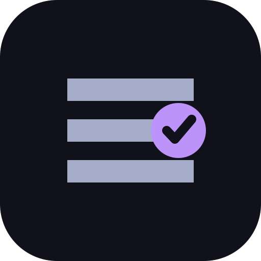
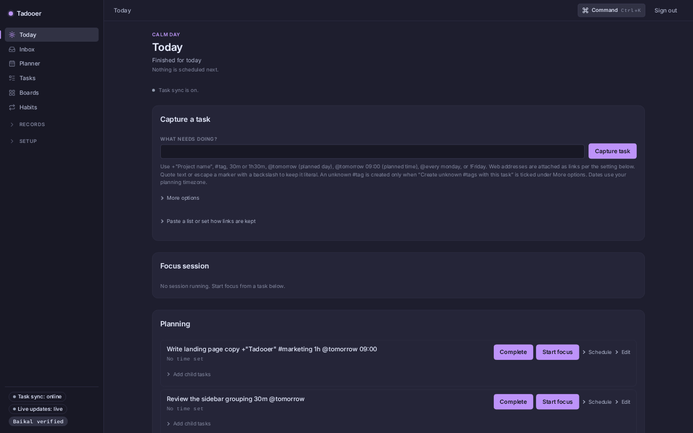
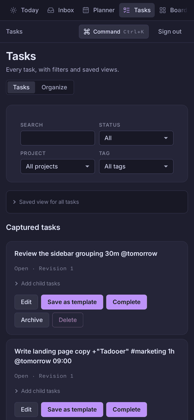

Capture
Type what needs doing. Give it a project or a tag, an estimate, a day or a time. The inbox keeps what is not placed yet.

TadooerPrivate planner · self-hosted · one owner
Here is the day. Your tasks sit beside the calendar. Choose one to work on. The rest can wait in the list.
Tadooer is a planner you run on your own server, for one person. There is no hosted service and no sign-up. The source is open.

The day
Type what needs doing. Give it a project or a tag, an estimate, a day or a time. The inbox keeps what is not placed yet.
Calendar events and planned tasks share one time grid, by day, three days or week. Unplanned tasks sit in a drawer beside it and can be dragged onto a day.
Panels are filters you choose: tags, markers, project, state. A board can belong to a project. Moving a task shows the change list before it applies.
The one thing now
Start focus from a task. One device controls the session; another can follow it or explicitly take over. When you come back from idle, the session asks what that time was and adds nothing on its own.
Time lands in the worklog by day, task and project. Habits and counters keep their own history in your time zone.

Your calendars
A Baikal CalDAV server is the calendar hub. Run the bundled one beside Tadooer or point it at the Baikal you already have.
Connects as a second source. Events show which calendar they came from and how fresh the projection is.
When a block changed elsewhere, Tadooer says so and waits for a decision. Nothing is overwritten quietly.
Your server
The first visit creates the owner account. There is no second account, no team plan and no public address to share.
SQLite on your server. Connector passwords are stored encrypted. Backup, restore and rollback are documented and rehearsed.
Task edits queue in the browser and sync when the server is back. Calendar and focus controls wait for a connection.
Reminders go through your own ntfy. GitHub and Gitea issues import as tasks with optional close and reopen write-back. An assistant can act only behind explicit approval.
Setup
Docker Compose with the bundled Baikal, or an existing Baikal. Baikal setup and production notes are in the repository.
Open the address you chose. The first screen creates the one owner and connects Baikal.
The web app, the Linux desktop client and your phone open the same planner. An Android shell exists in source; no built app is offered yet. Development notes cover the rest.
Where it comes from
Tadooer started as a port of Super Productivity and imports its backups: projects, tags, tasks and tracked time. It has since grown a server of its own, live sync between devices, a calendar hub and boards. Claims on this page match the main branch on the date in the footer.